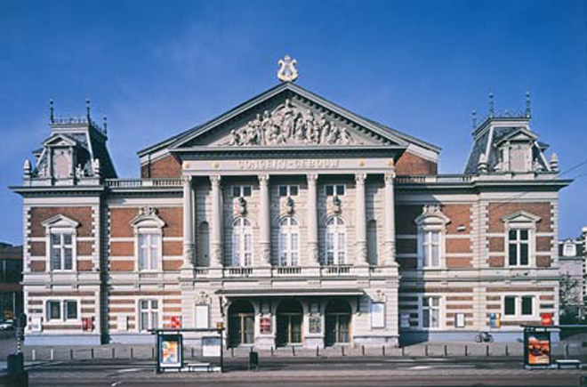
A work trip to Amsterdam for a concert performance of Bach's St. Matthew Passion at the Concertgebouw.
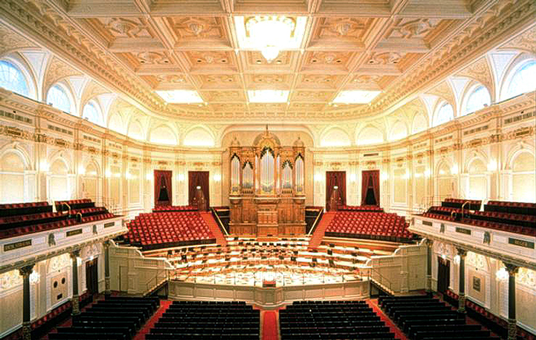
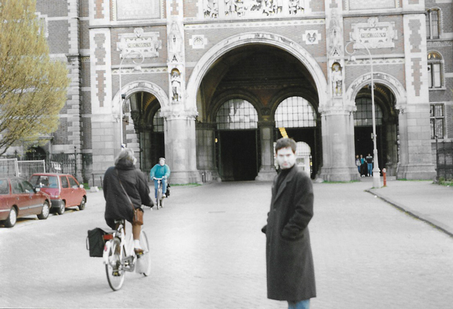
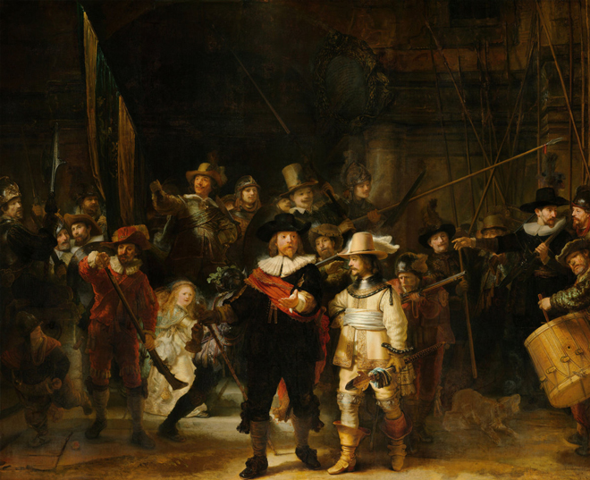
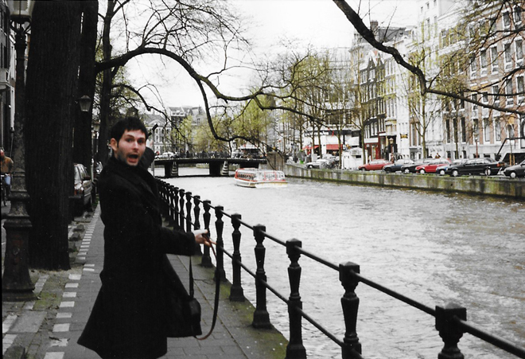
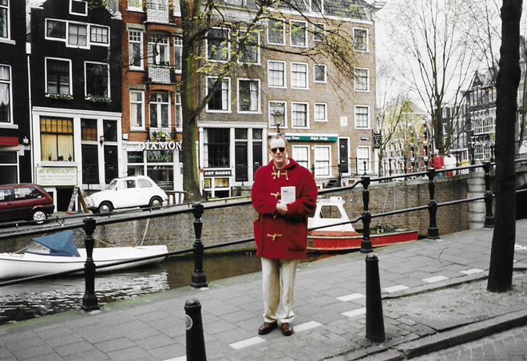
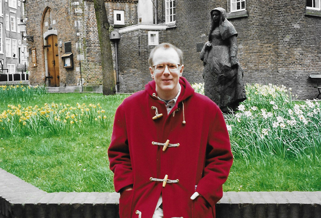
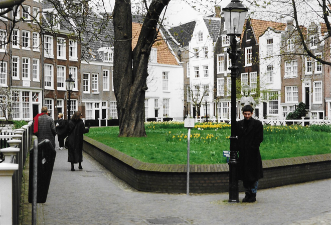
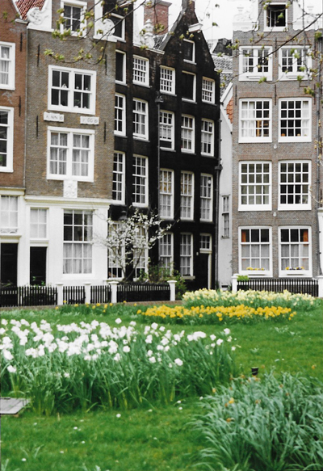
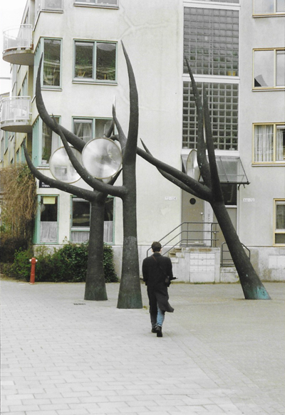
We walked through a housing project with some giant optical lenses fitted into the trees.
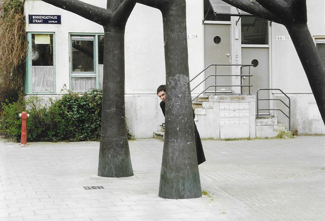
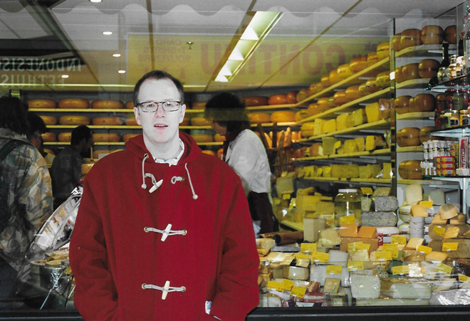
And then onto the market area where we saw cheese shops (lots of Edam!) and the flower market (lots of tulips!).
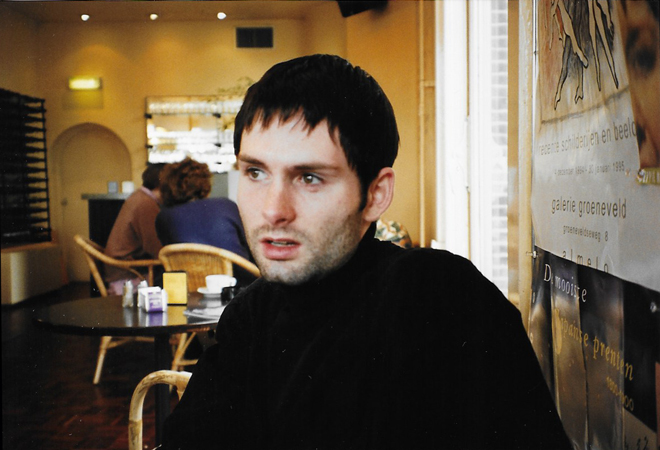
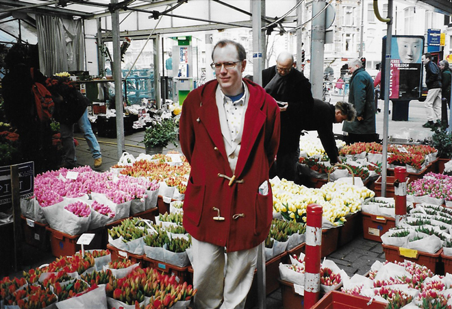
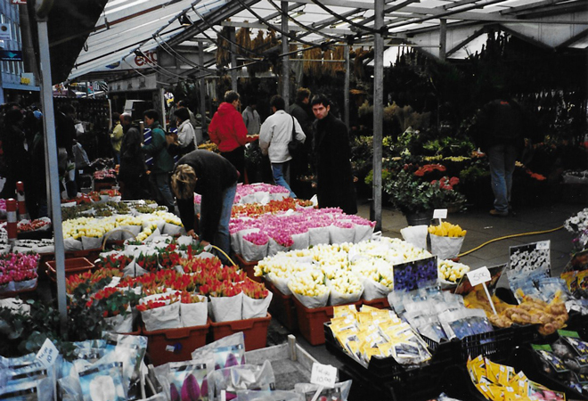
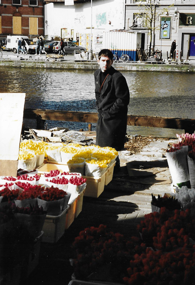
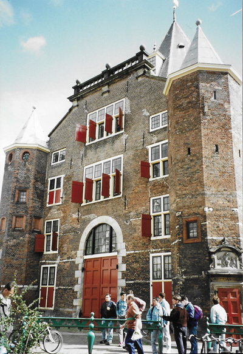
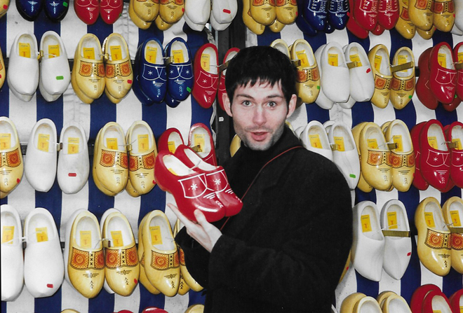
Clearly a tourist trap, but lots of brightly painted clogs do make a good photo ...
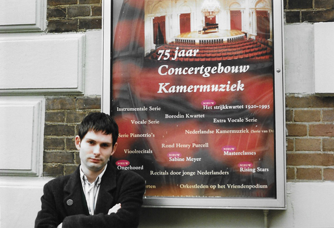